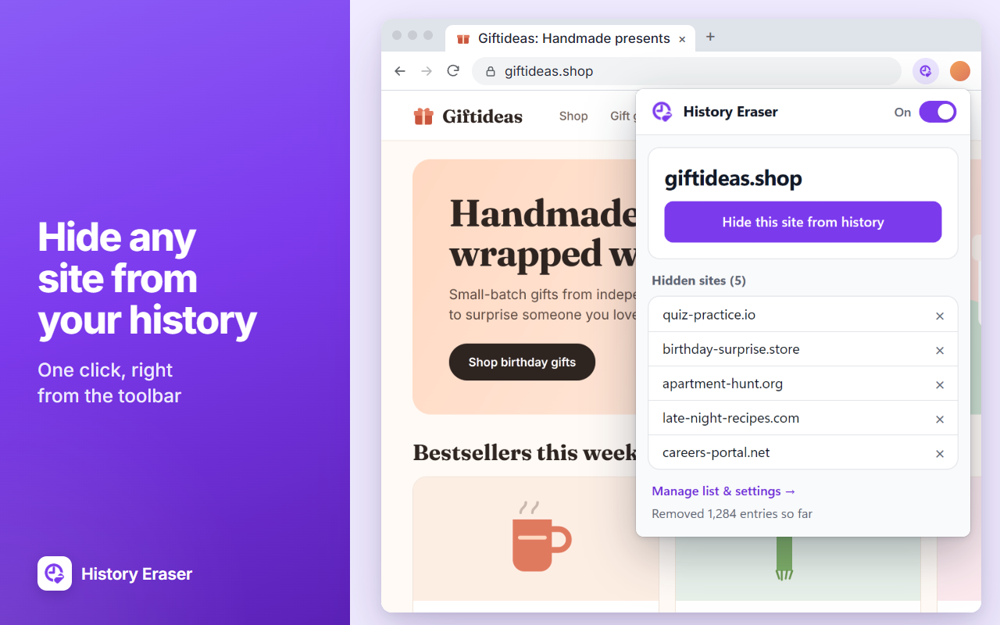

What it does
- On any site, click the toolbar icon, then “Hide this site from history”.
- Past visits are cleaned up right away, and future visits are erased automatically, subdomains included.
- One-click on/off switch, plus bulk add, import and export of your list.
- Your list syncs across your Chrome devices. Everything runs on your device: no servers, no tracking, no ads.
